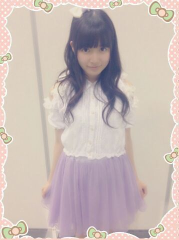
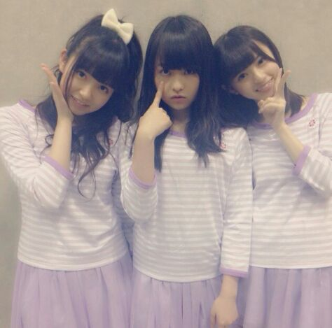
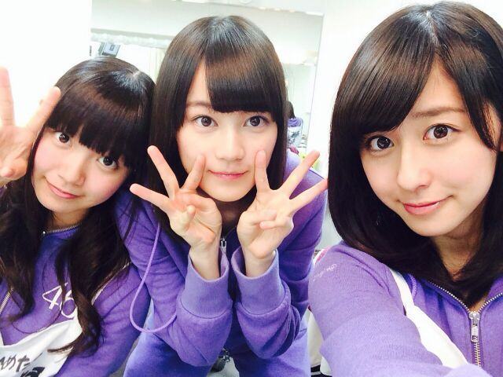
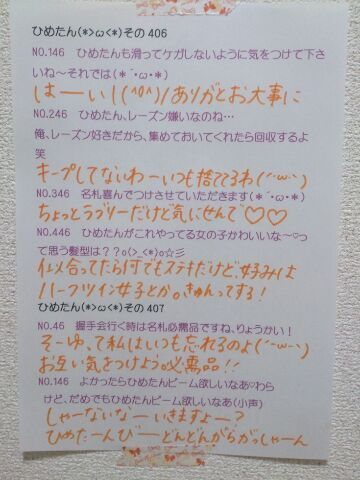
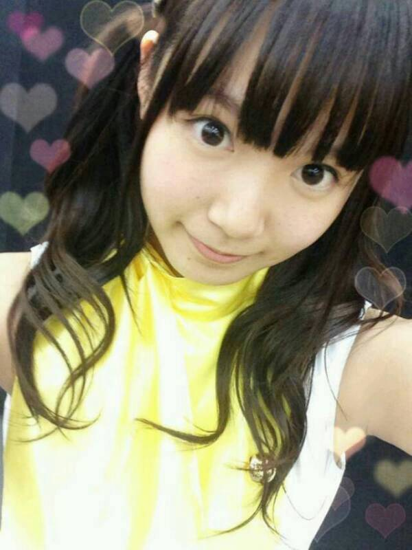
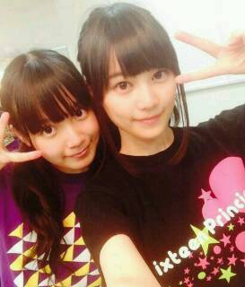
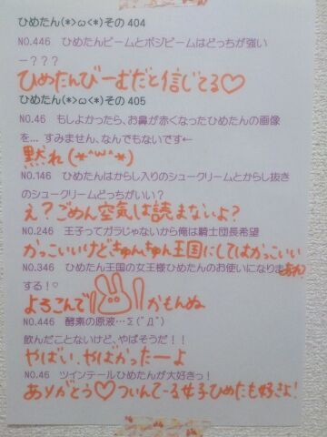
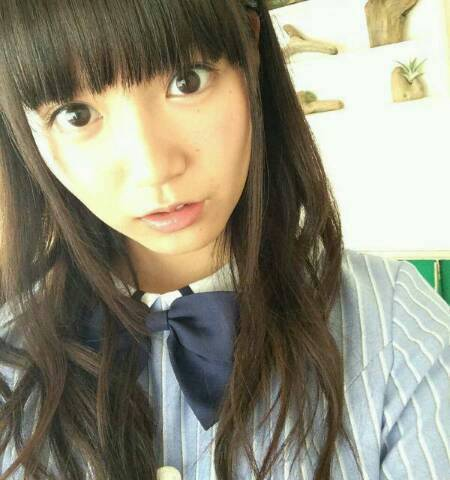
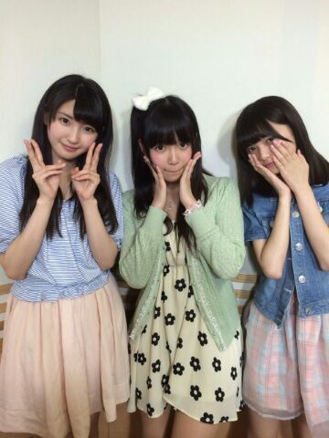
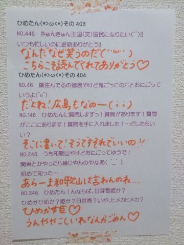

8th横浜個握！
今回の握手会は警備体制が厳しくなって
そのためにみなさんに
嫌な思いをさせてしまったかもしれません
そんな中でも来てくれて
本当にありがとうございます！
握手会が中止になったら
どうしようって心配もしていたのですが
みなさんの協力のおかげで
開催することができました(＾ω＾)感謝！
ひめたんは
1部、2部、3部に参加しました
1部、2部

3部

万理華とあすかりんとおそろっちー
BOMB5月号の衣装です／(^o^)＼
BOMBさんありがとうございますー♪
ヘアは
1部 巻きおろし
2部 サイドハーフアップ
3部 ハーフアップ
2部と3部の違いは
写メ見たらわかるかなー？
1部に来てくださった方が
「あれ？りぼんは？」ってなってたけど
1部は結ばないのがマイルールです◎
握手会くらいは冒険したいからねー
いつもツインばっかで見飽きたよーって方は
ぜひ個握に遊びに来てみてね←釣りったん
1ヶ月ぶりだったんかな？
何だか久々ーな感じで楽しかったなー
はじめましての方も
たくさん来てくださって
嬉しいかったよ！
そうそう、警備が厳しくなった関係で
推しタオルとか、名札とか、会員証とか、
何かを首に巻いたりができなかったみたいで。
名札や会員証はクリップで留めてる方は
問題ないみたいだから
よかったらお試しあーれヽ(・∀・)ノ
前回の乃木ののは
みおちゃん(堀未央奈ちゃん)
さゆりんご(松村沙友理ちゃん)でした！
文化放送はおやすみだったので
ラジオ福島、青森放送、山梨放送のみの
オンエアでした(´ω`)
みなさん聴いてくれたかなー？
プリンシパルのことを話したり
コーナーも充実して
なかなか楽しい時間をお届けできたかなーと
自分で言ってみちゃう←
進行はまだまだだけどね(´・ω・｀)
ほら！意欲はあるの！
技術が追いついてないだーけ！笑
次回の乃木ののは
ろってぃー(川村真洋ちゃん)
かなりん(中田花奈ちゃん)です☆
お楽しみにっ
今日は
陽菜ちゃん(川後陽菜ちゃん)とふたりで
開運音楽堂の収録曲をしてきました！
チェックしてみてねーよろしくねー♪
それから
Cool up girl's vo.2は
28日発売です＼(^o^)／
こちらはあすかりん(齋藤飛鳥ちゃん)とふたり！
個人PVダイジェスト盤の感想
ありがとうございます！
発売日になったら
個人PVのエピソードたくさん書きたい......♪
とってもステキな現場だったんだよ(＊^ω^＊)

 毎年地元で流しそうめんをやるのですが、
毎年地元で流しそうめんをやるのですが、
ひめたんを流してもいいですか？？ウォータースライダー((( OωO )))
ひめたんが本気で怒ったらどうなりますか？
地球が爆発する...？本気で怒った時は無になります
1番怖いやーつー((( OωO )))
中３組が三姉妹だったら、
長女、次女、末っ子はそれぞれ誰になると思う？長女......ひめたん
次女......いくちゃん
末っ子......るんるん かなあ
生まれた順だとこうなるけどなあ
ひめたんはなんとなく長女な気がする、なんとなく
いくたんは何故スリーピース？中3組の3！らしいよー?(^ω^)」
カレーライスかハヤシライスどっちが好き？カレーかなー
でも辛いのはあんま得意じゃないです。
ひめたは夏は好きですか？好きじゃないです( >_< )
春>秋>冬>夏ってことで1番嫌い。
薄着は苦手だし、冷房も苦手だし......
夏のいいところ誰か教えて。
ひめたん46は
今日はおやすみさせてください
ごめんね( >_< )
いつもたくさんのコメント
ありがとうございます
アンダーライブのリハ真っ最中！
覚えることがいっぱいで
今は毎日ばたばたしてるけど
こーゆーときこそタフでいなきゃ((( OωO )))
何よりライブができるのが幸せ♪
行くよーってみなさん
楽しみにしててくださいねっ
まだ詳しいことは言えないけど
前回のよりも確実に
パワーアップしてます、と思います。
(＊´・ω・＊)
9thシングルの特典映像は個人PV。
youtubeの公式チャンネルに
予告編がアップされました！
ひめたんのはType-Cに収録されてます♪
今回のテーマは しりとり！
歌もちょっとだけ歌いました♪
お楽しみにっ
SHIRITORI HOUSE
中元日芽香×月田茂・山本篤彦・柴谷麻衣
次回の乃木ののは
みおちゃん(堀未央奈ちゃん)
さゆりんご(松村沙友理ちゃん)です☆
文化放送はお休みなので
ラジオ福島、青森放送、山梨放送のみ
お届けします( ´ ▽ ` )ノ
放送圏にお住まいの方は
よろしくお願いします♪
火曜、水曜は撮影をしてきたよ！
火曜日は乃木どこ♪
水曜日は......まだ内緒♪
お楽しみにヽ(・∀・)ノ
そういや明日の沈黙の金曜日で
9thアンダー楽曲解禁！

 ひめたんは焼肉のタレは甘口、中辛、辛口、
ひめたんは焼肉のタレは甘口、中辛、辛口、
どれが好きですか？これは甘口派！
ライブ慣れしてない初心者は
どんな用意で参加したらいいですかね？推しメンタオルとか推しメンTシャツとか
推しメンうちわとかおすすめ( ^O^ )
はじめて参加するよーって方なら
とりあえずサイリウムとか持つだけでも
楽しいと思う♪
ちなみにひめたんはピンクのサイリウムが好き！
逆にこんな難しい漢字
書けるんだよーってのはあるの？
「とりりーぬさん」とか。「鳥氏」←これじゃない？
不二家でまなったんが
「たんひめ、ケーキどれにする」って
ペコちゃんに話しかけてたらどうする？おともだちだって思われたら恥ずかしいから
他人のフリする、かな(〃ω〃)
ひめたんは家族からは何て呼ばれてるの？ひめ、ひめたん、ひめすけ。
ひめたんはこの漢字読める？
『蛸』
別にぼけなくていいよ、ぼけなくていいから。なにこれフリ？
私は空気は読まないよ＼(^o^)／たこ！
ひめたーん！！！
文化祭で写真撮るとき、
ひめたんビーム使っていい？
良かったらひめたんビームで返してー(<・ω・>)
国語・数学・理科・社会・英語
の中でひめたんが好きな教科って何ー？？国語！
ひめたんの日記の
コメント欄下２ケタに46を踏んだ方へ
手書きでコメ返するコーナー
＼ ひめたん46 ／

いつもコメントたくさん
ありがとうございます
プリンシパル終わって一息......と思いきや
なんだかんだでバタバタの毎日
うん、なんか乃木充してるぞ(＊´ω`＊)
これからはライブづくしじゃ！
日芽香
16人のプリンシパルtrois 千秋楽を迎えました！
来てくださったみなさん
応援してくださったみなさん
本当にありがとうございました(＊^O^＊)
ひめたんは
キャサリン
ベル
マキア
侍女1 ×2
侍女2
侍女3
侍女4
として2幕に出演しました
投票してくださったみなさん
ありがとうございました。

写メはマキア
ひめたんはーそうですね
今回のテーマが「笑い」とゆーことで
苦戦を強いられてましたねー
中身は割と真面目なんでね、ええ←
ひめたんが2幕に出てる姿を
見たかったのになー落ちちゃったんだよなー
って方が多いと思います
せっかく来てくれたのにごめんなさい。
個人的には今回の公演は辛かったなあ
苦手なジャンルってこともあるし
成績が悪かったってこともあるけど
ファンのみなさんに心配させたり
君の推しは出来損ないで恥ずかしいねー
とかみなさんが言われてたりしたらどうしようとか
いろいろ考えていろいろ辛かったです
メンバーにもなんだか気を遣わせちゃったり
大泣きしたりいきなり大声で叫んだり、と
ほんとに私は甘えん坊で迷惑な奴(´・ω・｀)
プリンシパル中はいつも以上に
みなさんからの日記のコメントが
グサッと心に響いたし
メンバーのことがさらに大好きになりました///
やっぱり高い壁を乗り越えたとき
得るものはあるのだなあ。
ちなみにひめたん
涙腺はそんなに緩くないから
そんなに泣くことないんだけど
今回のプリンシパルに関しては
1番泣いた自信があるね！
いつも激戦区に突っ込むし。
狙ってるでしょ？ってくらいにいつも激戦区で
そんな自分が哀れで
途中から楽しくなってきたよほんとに(笑)
13日の金曜日に何かが起こったのかなー
楽しんでやることが大事なんだと
身を持って感じることができました(＾ω＾)
お芝居するの楽しかったなあー
また機会があったらいいなーと思います♪
とゆーことで無事
千秋楽を迎えることができました
公演を楽しみにしてくださったファンのみなさん
ステキな舞台を用意してくださったスタッフさん
そして一緒に頑張って来たメンバーのみんな
この舞台に携わってくださった
すべての人に感謝です！
本当にありがとうございました。
そしていくちゃん(生田絵梨花ちゃん)は
握手会等を残して最後の活動とゆーことで
終わったあとで泣きついたら
「やめてよ握手会行きづらいじゃーん(笑)」なんて
言われちゃった(´・ω・｀)
あ、あれ(´・ω・｀)笑
でも、3幕のライブで
いくちゃんコールを聞く度に
ひとりで勝手にうるうるしてた私。
だって寂しいんだもんー
もうちょっと活動は残ってるけど
とりあえずプリンシパルお疲れ様でした
今年も大活躍だったね！
やっぱりプリンシパルはいくちゃんがいないと
成立しないような気がするよ(＊^O^＊)
夜になるとうるさい子も
いないと静かで寂しいんだから
だからはやく戻ってきてね待ってるよ！

前回の乃木ののは
さゆにゃん(井上小百合ちゃん)
あしゅりん(齋藤飛鳥ちゃん)でした！
オンエア聴いて思ったのが
ベテランふたりを前にびびって
なんか声色がいつもより暗かった気がする(笑)
R.Nはラジオネームって読むんだよね
初々しさが抜けない感じどうですかみなさん
まーた噛んでやんのケケケッψ(｀∇´)ψ
って鼻で笑いながら
楽しんでいただければ幸...やだ悔しい！
広島弁はすっかり出てこなくなったとか
ひめたんはハッキリと言いましたが
前回の放送を聴いたひめたんままに
「訛ってるよね」ってー
恥ずかしいねこの感じ←
広島愛してる(＾ω＾)
あと乃木どこ！
前回の乃木どこは観てくれたかな？
何にもしてないけど
ただただひめたんびーむやりました(<・ω・>)
鍵盤ハーモニカと
ルービックキューブと
ひめたんびーむの夢の共演。
またすぐに全員回があると思いますお楽しみに♪

 ひめたんは名前の『ひめ』の部分が
ひめたんは名前の『ひめ』の部分が
『姫』だったら良かったって
思ったことはありますか？嫌だよ(´・ω・｀)名前負けするよ
画数の良い漢字を探してくれたらしいので
「姫香」だったらちょっと今とは違う
人生になっていたかもしれません
ひめたんは動物園と水族館どっちが好き？？うーーーんどっちかってんなら水族館かな
どっちも自ら行こうとは思わんなー
フグ死んでしまったでござる
これこそゲーセンクオリティでござるな
一人暮らし寂しいでござる
そんな時どうしたら良いですか？えええええぇえぇぇええええまじか(゜゜)
はやくね？ひめたん前回名前つけたばっかよ？
もうねゲーセンに住んだらいいと思う
鏡の中の自分に
じゃんけんで勝ちたいんだけど、どうしたらいい？殴って割ったらいーと思う
あ、でも先に言っとくね
ケガしたらごめんねψ(｀∇´)ψ
ひめたんの日記の
コメント欄下２ケタに46を踏んだ方へ
手書きでコメ返するコーナー
＼ ひめたん46 ／

いつもコメントたくさんありがとうございます
プリンシパル終わって
一段落かなーと思いきや
これからアンダーライブも全国ツアーもあるね
今年の夏は楽しくなりそうだなあー！
(＊´・ω・＊)

16人のプリンシパルtrois
ついに明日 千秋楽を迎えます！
13(金)夜公演 キャサリン
14(土)昼公演 ベル
14(土)夜公演 マキア
いままで散々の結果でしたが
18回目の公演で
初めて10役に選んでいただきました
心配してくださっていたみなさん
お待たせー（ ; ; ）ありがとうー
実はキャサリン、ベル、マキア
この3人はお稽古中から
狙っていた役だったの！
木曜日の時点では
このうち一人でも演じられたらいいなー
なんて思っていたのに
まさか達成できるとは（ ; ; ）（ ; ; ）
プリンシパルは明日の2公演で
終わってしまうけれど
最後まで楽しむ気持ちを忘れずに
笑顔でがんばります♪

明日は乃木ののの日です☆
さゆにゃん(井上小百合ちゃん)
あしゅりん(齋藤飛鳥ちゃん)
ぜひ聴いてくださいねー
そう、前回の日記に
MCおめでとうコメントたくさん
ありがとうございました！
今日はここが良かったよーとか
ここはもうちょっとこうしなきゃーとか
感想でも質問でも
どんどん日記に書いてねーそしたら読むよー♪
番組にお便り送ってくれたら
ひめたん読むよー( ^O^ )
9thシングル「夏のFree&Easy」
ジャケ写公開されました！
今回もType-Cは
アンダーバージョン仕様になってます
あの、オモテにいなくても
中の歌詞カードに...います多分...きっといます......

 拙者は今日ゲーセンでフグをとったでござる
拙者は今日ゲーセンでフグをとったでござる
よければ名前をつけていただけないでござろうか？ひよこ(by 愛未)
ひめたんはどんな"おなかもと"を
貰ったらうれしいですかー？そのネタはねーもうね
小学校低学年の頃からずーっとずっと
言われ続けていて慣れております
毎年この季節になると街歩いててそわそわする......
なんでそんなにスペイン語話せるんですかたわけヽ(・∀・)ノ
いつも口が開いてて
へらへらしてるって言われます。
頑張って閉じてても気付いたら開いてます。
どうしたらいいですか？ 仕方ない、私が縫おう。
ひめたんは梅雨の時期好き？カビない？好きじゃないけど
さすがにカビませんねー
ひめたんがカビて青緑くなったら
キモくない？キモいよー(((o(*゜▽゜*)o)))
ひめたんて、もうイヤだ!!って思っても
我慢しなきゃならないとき、
どうやってその鬱憤の対処する？一番は 寝る、かな。
日々積み重なっていくものってあると思うから
一概に良い方法と言えるかわかんないけど
でも、どうしても辛いことがあった日にも
頑張っておうちまで持ち帰って飲み込む。
それが無理そうなら
話を聞いてくれる誰かに付き合ってもらって
全部吐き出したらいいと思うよ。
ひめたんの日記の
コメント欄下２ケタに46を踏んだ方へ
手書きでコメ返するコーナー
＼ ひめたん46 ／

いつもたくさんのコメント
ありがとうございます
たくさんの励ましのコメント
ほんとにありがとねー（ ; ; ）
みんなのおかげで頑張れるよー！
最近はメンバーのみんなと
ますます仲良くなれた気がして嬉しい♪
りんご王国のさゆりんご姫とは
あいかわらず友好関係を
保っておりますよーヾ(＠⌒ー⌒＠)ノ
かなりんも玲奈さんも
いつでもひめたんタクシーで待ってますよー♪
ひめたんタクシーってなんぞやって思った方は
16人のプリンシパルtrois公式サイト
13(金)の公演日報を見てね☆
(＊´・ω・＊)
 」も
」も